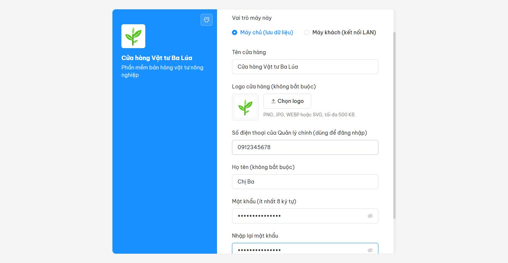
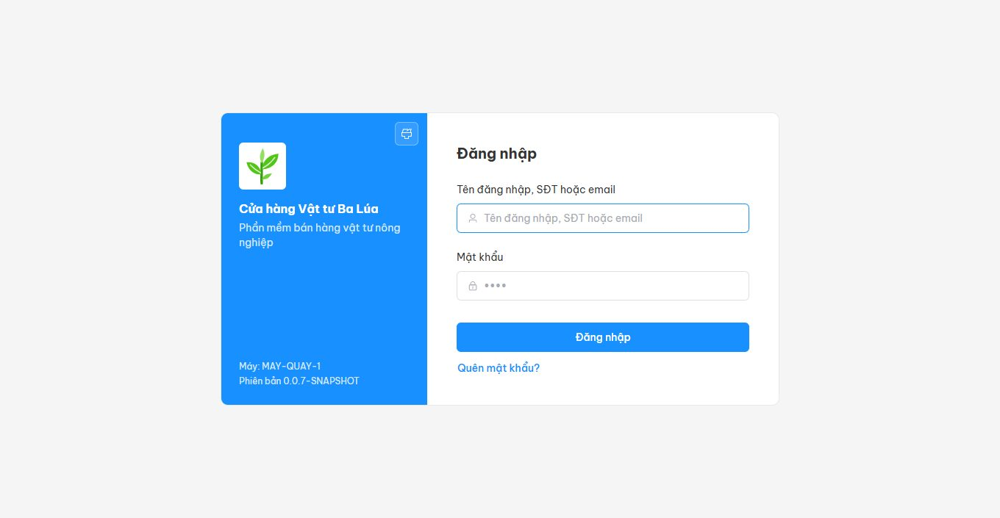
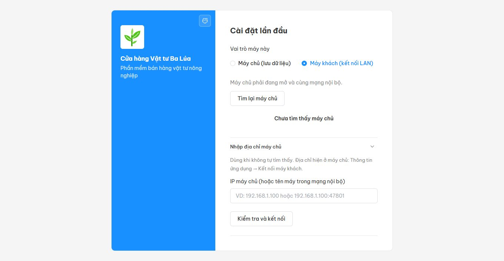
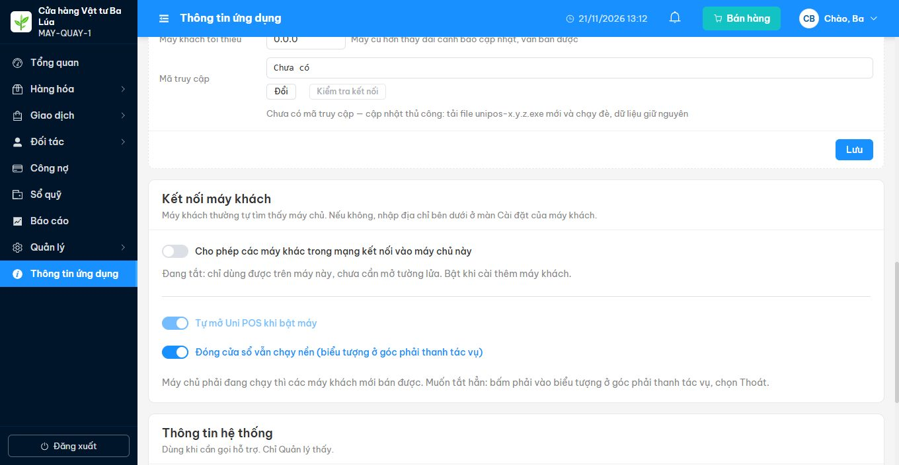
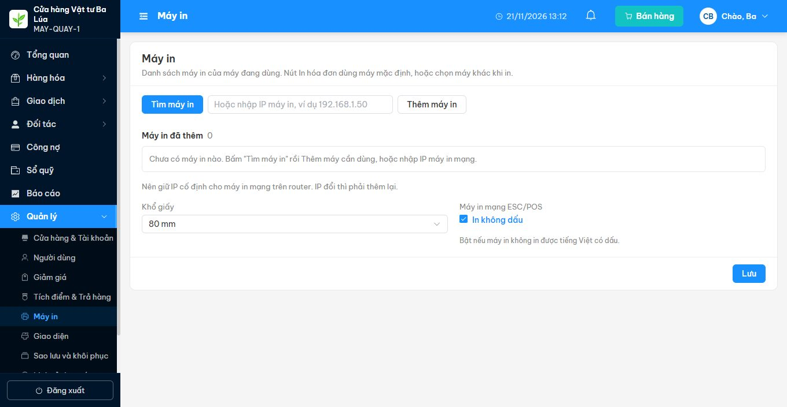

Hướng dẫn cài đặt
Làm lần lượt từng bước. Cài xong là bán hàng được ngay.
Trước khi cài
- Máy tính chạy Windows 10 trở lên.
- Chọn một máy làm máy chủ. Máy này lưu toàn bộ dữ liệu bán hàng và phải được mở khi các quầy khác đang bán. Nên là máy ít hỏng, ít bị tắt.
- Các máy khác (quầy thu ngân, kho) là máy khách. Tất cả phải cùng một mạng (cáp mạng hoặc Wi-Fi của cùng một bộ phát).
- Cửa hàng chỉ có một máy? Chỉ cần cài máy chủ, bỏ qua phần máy khách.
Cài app lên máy
-
Chạy file cài đặt
Bấm đúp vào file
unipos-….exedo bên hỗ trợ gửi. Cài không cần quyền quản trị và chỉ cài cho tài khoản Windows đang dùng.Windows có thể hiện cảnh báo kiểu "Windows protected your PC" vì app chưa có chữ ký số. Đây là bình thường. Bấm More info (Thông tin thêm), rồi Run anyway (Vẫn chạy).
Nếu phần mềm diệt virus chặn hoặc cách ly file, nhờ người quản trị thêm ngoại lệ cho thư mục cài và thư mục dữ liệu của Uni POS.
-
Chọn nơi cài và nơi lưu dữ liệu
Trình cài hiện hai trang chọn thư mục. Để mặc định và bấm tiếp là được.
- Nơi cài app: thư mục chương trình.
- Thư mục dữ liệu: nơi lưu dữ liệu cửa hàng. Mặc định nằm trong thư mục ẩn của tài khoản Windows trên ổ C (
…\AppData\Local\UniPOS). Muốn dễ sao lưu thì chọn ổ khác, ví dụD:\UniPOS.
Trong thư mục dữ liệu có hai thư mục con:database(cơ sở dữ liệu và bản sao lưu) vàsettings(cài đặt của app). Đừng xóa hay sửa tay các thư mục này. -
Mở Uni POS
Cài xong, bấm biểu tượng Uni POS trên màn hình nền để mở. Lần đầu mở sẽ hiện màn hình Cài đặt lần đầu.
Dành cho người hỗ trợ: cài tự động bằng file cài đặt sẵn
Nếu để file unipos-setup.json cạnh file cài, trình cài sẽ cài tự động, không hỏi gì, rồi mở app. File này có thể sẵn vai trò máy, tên cửa hàng, thư mục dữ liệu và tài khoản Quản lý đầu tiên. Dùng xong file bị xóa khỏi nơi app đọc. Đừng để file này nằm lâu vì có thể chứa mật khẩu.
Thiết lập máy chủ
Làm một lần, trên máy được chọn làm máy chủ.
-
Chọn "Máy chủ"
Ở màn hình Cài đặt lần đầu, chọn Máy chủ (lưu dữ liệu).
-
Điền thông tin cửa hàng và tài khoản
- Tên cửa hàng. Logo có thể thêm sau.
- Số điện thoại của Quản lý chính. Đây là tên đăng nhập.
- Mật khẩu (ít nhất 8 ký tự), nhập lại lần nữa.
Bấm Bắt đầu sử dụng.

Màn hình Cài đặt lần đầu khi chọn Máy chủ. Bấm vào ảnh để xem lớn. Nhớ mật khẩu. Ghi lại số điện thoại và mật khẩu ở nơi an toàn. Quản lý chính là tài khoản có đủ quyền để tạo tài khoản cho nhân viên. -
Đăng nhập
Đăng nhập bằng số điện thoại và mật khẩu vừa tạo. Xong. Nếu cửa hàng chỉ có một máy, bạn có thể bắt đầu bán hàng ngay.

Màn hình đăng nhập.
Cài máy khách (quầy khác)
Làm trên từng máy còn lại. Máy chủ phải đang mở và đã bật cho phép máy khách kết nối (xem phần kế tiếp).
-
Cài app như ở trên
Làm lại phần "Cài app lên máy" trên máy khách.
-
Chọn "Máy khách"
Ở màn hình Cài đặt lần đầu, chọn Máy khách (kết nối LAN). App tự tìm máy chủ trong mạng và kết nối khi chỉ có một máy chủ.
Nếu chưa thấy, bấm Tìm lại máy chủ.
-
Nếu vẫn không tìm thấy: nhập địa chỉ máy chủ
Mở mục Nhập địa chỉ máy chủ, gõ địa chỉ IP của máy chủ (ví dụ
192.168.1.100) rồi bấm Kiểm tra và kết nối. Địa chỉ này xem ở máy chủ: Thông tin ứng dụng → khối Kết nối máy khách.
Máy khách: tìm máy chủ, hoặc nhập địa chỉ máy chủ. Lần sau mở app, máy khách nhớ máy chủ và tự kết nối, chỉ cần đăng nhập.
Cho phép máy khách kết nối
Chỉ cần làm khi có máy khách. Làm trên máy chủ, bằng tài khoản Quản lý.
-
Bật công tắc
Vào Thông tin ứng dụng, kéo xuống khối Kết nối máy khách, bật công tắc Cho phép các máy khác trong mạng kết nối vào máy chủ này.

Khối Kết nối máy khách. Công tắc mặc định tắt; bật lên thì hiện thêm địa chỉ máy chủ và tình trạng kết nối. -
Đồng ý khi Windows hỏi quyền quản trị
Windows hiện hộp thoại hỏi quyền. Bấm Có. Nếu máy dùng tài khoản thường, Windows sẽ đòi mật khẩu của người quản trị máy. Uni POS tự mở lại sau khoảng 10 giây.
-
Kiểm tra tình trạng
Thẻ Tình trạng hiện "Các máy khách kết nối được" là xong. Nếu hiện cảnh báo, bấm Sửa kết nối rồi làm theo hướng dẫn trên màn hình.
Cài máy in
Mỗi máy tính có danh sách máy in riêng. Làm trên máy nào cần in thì cài ở máy đó.
-
Mở trang Máy in
Vào Quản lý → Máy in.

Trang Máy in. -
Tìm hoặc nhập máy in
- Bấm Tìm máy in. Máy in đã cài trong Windows (USB hoặc đã thêm sẵn) và máy in mạng tìm thấy sẽ hiện ở mục "Tìm thấy, chưa thêm".
- Không thấy máy in mạng? Gõ địa chỉ IP của máy in vào ô nhập rồi bấm Thêm máy in.
- Bấm Thêm ở máy in cần dùng. Có thể thêm nhiều máy in và đặt tên gọi riêng, ví dụ "Quầy 1".
-
Chọn máy in mặc định, in thử
Bấm chọn một máy làm mặc định. Bấm In thử để kiểm tra, rồi Lưu. Khi in hóa đơn, app dùng máy mặc định; trên màn hóa đơn có thể đổi sang máy khác cho riêng lần in đó.
Mẹo cho máy in nhiệt qua mạng: nhờ người lắp mạng giữ IP cố định cho máy in. Máy in cùng mạng với máy tính và nghe cổng 9100 thì mới in thẳng được.
Nếu máy in nhiệt không in được chữ có dấu, bật In không dấu trên trang Máy in.
Sao lưu và cập nhật
Sao lưu dữ liệu
Vào Quản lý → Sao lưu và khôi phục. App tự sao lưu theo lịch, và có nút Sao lưu ngay. Bản sao lưu nằm trên máy chủ, chưa an toàn nếu máy chủ hỏng. Hãy chép thêm ra USB hoặc Google Drive, tối thiểu mỗi tuần.
Cập nhật phần mềm
Khi có bản mới, máy chủ tự tải và tự cài vào giờ đã đặt (mặc định 22:00), nếu lúc đó không còn máy nào đang bán. Máy khách tự cập nhật theo máy chủ. Xem tình trạng ở Thông tin ứng dụng.
Gỡ cài đặt
Vào Cài đặt Windows → Ứng dụng → chọn Uni POS → Gỡ cài đặt. App hỏi có xóa dữ liệu cửa hàng không:
- Không (mặc định): chỉ gỡ app, giữ nguyên dữ liệu để cài lại sau.
- Có: app hiện thư mục chứa cơ sở dữ liệu và bản sao lưu, cho bạn mở ra để sao chép ra ngoài. Sau đó hỏi xác nhận lần cuối (mặc định "Không" là hủy). Chỉ bấm Có khi đã chép xong.
Gặp lỗi thường gặp
| Hiện tượng | Cách xử lý |
|---|---|
| Máy khách không tìm thấy máy chủ | Kiểm tra máy chủ đang mở app, hai máy cùng mạng, và công tắc "Cho phép các máy khác kết nối" ở máy chủ đã bật. Bấm Tìm lại máy chủ, hoặc nhập địa chỉ IP của máy chủ. |
| Thẻ Tình trạng báo Windows đang chặn | Ở máy chủ, bấm Sửa kết nối và đồng ý hộp quyền quản trị. |
| Wi-Fi của cửa hàng là Wi-Fi khách, hoặc bật "cô lập thiết bị" | Các máy không thấy nhau. Đổi sang Wi-Fi chính của cửa hàng hoặc cắm cáp mạng. |
| Hai bộ phát (hai mạng khác nhau) | Tìm tự động không xuyên được giữa hai mạng. Đặt máy chủ ở phía bộ phát chính và nhập tay địa chỉ máy chủ ở máy khách. Tốt nhất đặt bộ phát phụ ở chế độ cầu nối (AP) để chung một mạng. |
| Máy chủ báo cổng đang bị chương trình khác dùng | Uni POS tự chuyển sang cổng trống khác, bạn không cần làm gì. Máy khách tự tìm ra cổng mới. |
| Máy in không in | Kiểm tra máy in bật, cùng mạng, đã chọn đúng máy mặc định; bấm In thử ở trang Máy in. |
| Đăng nhập tài khoản Windows khác thì không thấy Uni POS | App cài theo từng tài khoản Windows. Hãy luôn dùng một tài khoản cố định cho cửa hàng. |